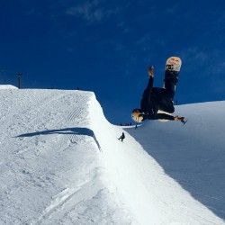
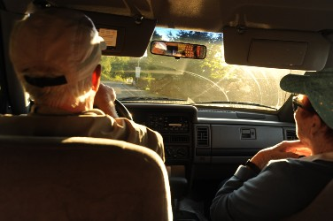

Target Audience
The target audience for this website is anyone that is interested in the weather, news, and upcoming events for Idaho. These individuals may be people that are traveling to see family across the state or going to the slopes. The individuals will be people who randomly need information spanning to those that like to keep up to date with their local news and events. Below are two examples of potential individuals and the examples show the difference in who are audience for this website. Below these two examples are 5 scenarios for people looking to use the site.
Snowboarder
Demographics
- 21 year old male
- Single
- College student
Goals
- Graduate college
- Have fun
- Date
Grandmother
Demographics
- 65 year old female
- Married
- Retired
Goals
- Visit family
- Temple work
- Avoid accidents on the road
Scenario 1
A snowboarder is wanting to know the weather forecast to know how much snow to expect on the slopes for the upcoming halfpipe competition that he learned about on our site.

Scenario 2
A grandmother wants to know the weather conditions before traveling with her husband to see her grandkids who live across the state. They are taking the kids to the circus that is in town while they are there. They learned about this through our weekly newsletter.

Scenario 3
College students want to know the temperature before going boating and trying their tower on the boat. They want to make sure it is not a windy day while boating while going tith their dates. They are then going out to each at a new restaurant they got a discount to by winning a contest on our website.
Scenario 4
A grandpa wants to make sure it is a calm day to go golfing with his friends. He found a local group on our site that play twice a week and he has yet to be the winner of 18 holes. He is feeling good about it tomorrow since it is a sunny calm day.
Scenario 5
The parents want to know if they need umbrellas at their daughters soccer game. Turns out they don't, but instead learned about 2 summer camps for soccer through the events page on our site.